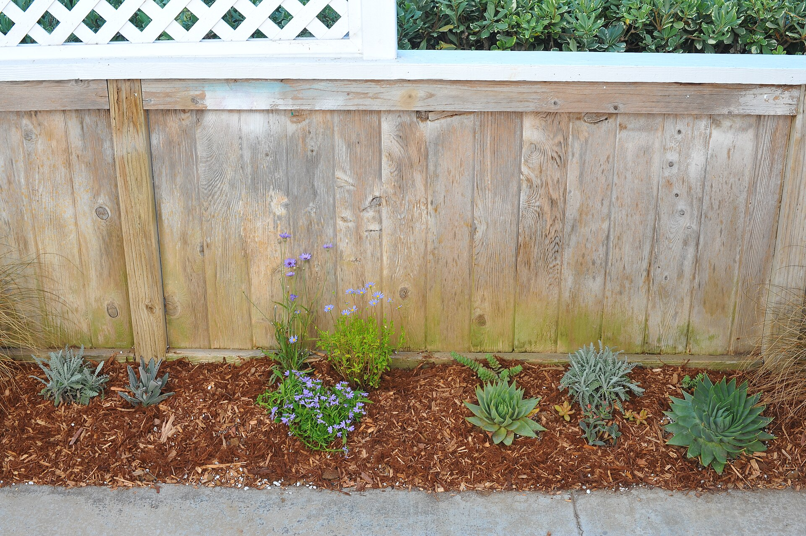
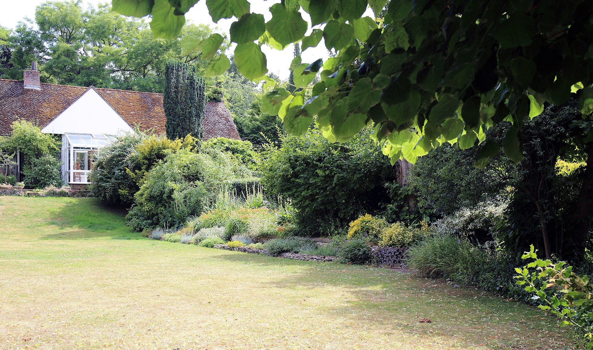

Whether it's a blank new-build plot, an overgrown garden you've inherited, or a yard that could be so much more, a proper design turns it into space you actually use.
A designer walks the plot with you, listens to how you want to use it - entertaining, kids, low maintenance, growing your own - and draws up a plan. Then the build happens in stages: clearance and levelling, hard landscaping like patios and paths, then beds, planting and lawn. Batley's sloped plots and clay soil are planned around, not fought against.
Simple refreshes start around £800. Full redesigns with hard landscaping usually run £2,500 to £8,000+ depending on size, materials and levels. Stage the work over seasons if that suits your budget.
Heavy clay soil is the norm around Batley - the right planting and drainage at the start saves years of fighting waterlogged beds later. Ask for it in the plan.

